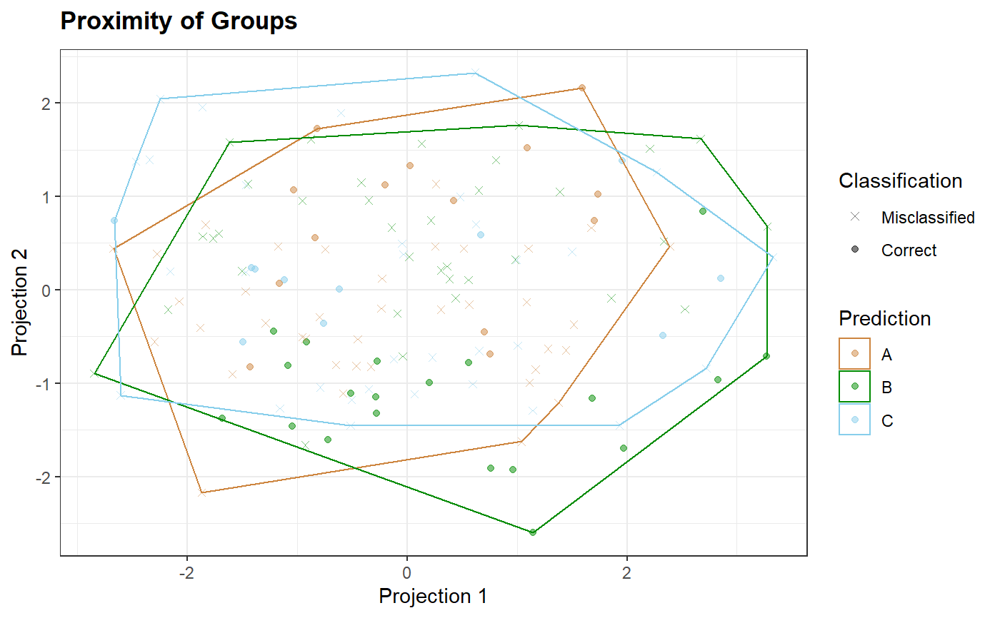
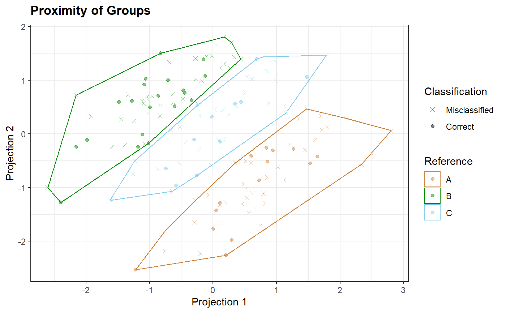
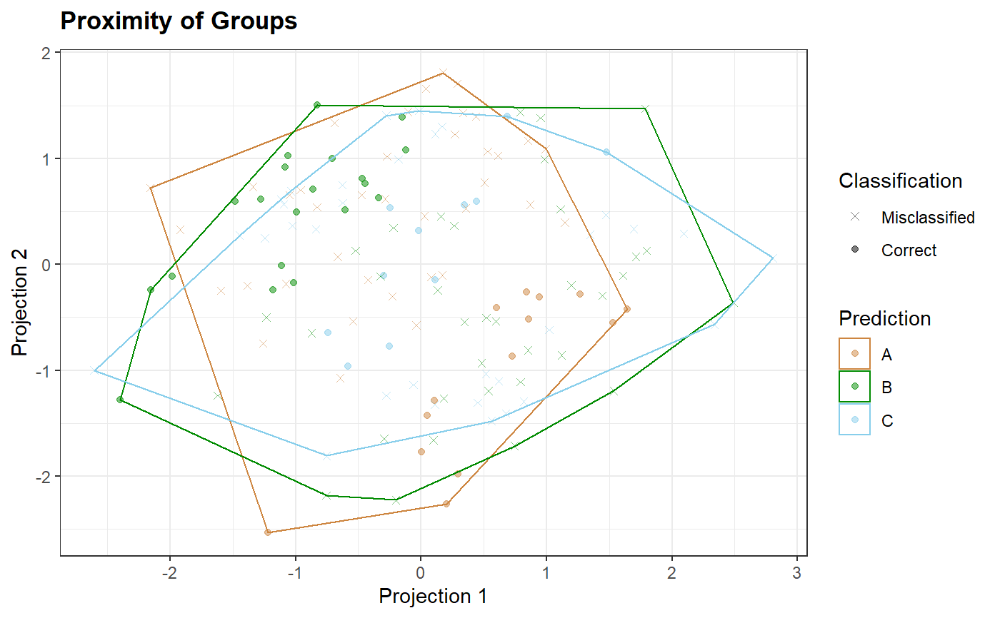

qplot_prediction.RdPlot a 2D scatterplot that represents multidimensionally scaled data.
qplot_prediction( scores, Prediction, Reference, xLabel = paste("Projection", xproj), yLabel = paste("Projection", yproj), Title = "Proximity of Groups", subTitle = NULL, palette = hyGet_palette(scores), type = c("Prediction", "Reference"), stat = c("chull", "ellipse", "none"), type.stat = type, MDS = c("metric", "isoMDS"), plot.scatter = TRUE, alpha = 0.5, k = 2, xproj = 1, yproj = 2 ) qplot_proximity( scores, by, xLabel = paste("Projection", xproj), yLabel = paste("Projection", yproj), Title = "Proximity of Groups", subTitle = NULL, palette = hyGet_palette(scores), stat = c("chull", "ellipse", "none"), MDS = c("metric", "isoMDS"), plot.scatter = TRUE, alpha = 0.5, k = 2, xproj = 1, yproj = 2 )
| scores | Components' amplitudes (scores) as either a matrix or a
|
|---|---|
| Prediction | Predicted groups. Either a variable name or a vector. |
| Reference | Reference grpups. Either a variable name or a vector. |
| xLabel | A label for abscisa (x) axis. |
| yLabel | A label for ordinate (y) axis. |
| Title | The main title for the plot. |
| subTitle | The second line of title, which will be smaller and and in italics. |
| palette | A color palete to be used. Default is `ggplot2` default palette. |
| type | A type of data for scatterplot: either "prediction" (default) or "reference". |
| stat | A statistic to be added, either "chull" - convex hull (default), "ellipse" or "none" |
| type.stat | A type of data for |
| MDS | A type of Multi-Dimensional Scaling. |
| plot.scatter | Logical. If |
| alpha | Transperency of points. |
| k | The desired dimension for the solution, passed to |
| xproj, yproj | An integer: a number of MDS projection to plot on x, y axis (respectively). |
| by | A grouping variable |
A ggplot object.
More details in package ggplot2.
Other spHelper plots:
check_palette(),
layer_spRangeMean(),
plot_colors(),
plot_hyPalette(),
plot_spCompare(),
plot_spDiff(),
plot_spDistribution(),
qplot_confusion(),
qplot_crosstab(),
qplot_infoDim(),
qplot_kAmp(),
qplot_kSp(),
qplot_spRangeCenter(),
qplot_spRangeMedian(),
qplot_spStat(),
qplot_spc(),
rmExpr(),
rm_stripes(),
stat_chull()
# Examples with a `hyperSpec` object: data(Scores2) Scores2$Prediction <- sample(Scores2$gr) Scores2 <- hyAdd_color(sp = Scores2, by = "gr", palette = c("tan3", "green4","skyblue")) qplot_prediction(Scores2,Prediction = "Prediction", Reference = "gr")qplot_prediction(Scores2,Prediction = "Prediction", Reference = "gr", type = "ref")qplot_prediction(Scores2,"Prediction","gr", type.stat = "ref", MDS = "isoMDS")qplot_prediction(sc,"Prediction","gr", type = "prediction")qplot_prediction(sc,"Prediction","gr", type = "prediction", type.stat = "ref")qplot_prediction(sc,"Prediction","gr", type = "prediction", type.stat = "ref",stat ="ellipse")sc <- Scores2[,,c(1,2),wl.index = TRUE] sc <- hyAdd_color(sp = sc , by = "class", palette = c("tan3", "green4","skyblue","violet")) sc$ID <- rownames(sc) qplot_proximity(sc, "class")qplot_proximity(sc, "class", plot.scatter = FALSE) + geom_text(aes(label = sc$ID))